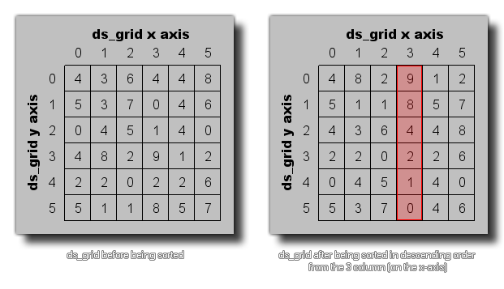

Cette fonction peut être utilisée pour trier un ds_grid en fonction des valeurs d'une colonne donnée (à l'instar du tri des fichiers par date, taille, etc. dans l'Explorateur Windows). L'image suivante montre un exemple: 
ds_grid_sort(index, column, ascending);
| Argument | La description |
|---|---|
| index | L'index de la grille à trier. |
| column | La colonne à utiliser pour trier les lignes |
| ascending | S'il faut trier du plus bas au plus élevé ( true ) ou du plus élevé au plus bas ( false ). |
N/A
ds_grid_sort(grid, 3, false)
Cela prendrait toutes les valeurs de ds_grid indexées dans la variable "grille" et les trierait en fonction des valeurs trouvées dans la 3ème colonne de la grille (comme indiqué dans l'image ci-dessus).